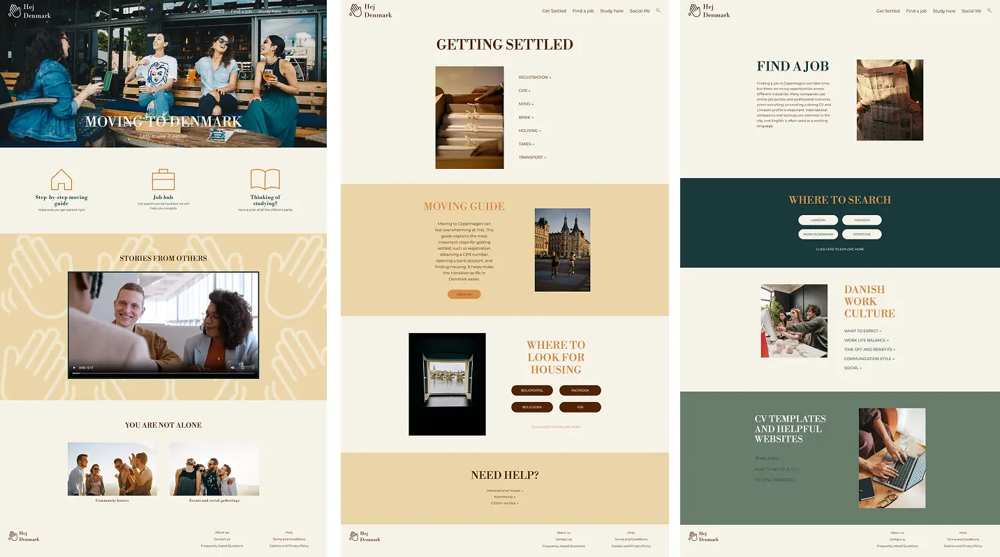

TEMA 3
UX/UI
LØSNING
I dette tema udviklede jeg et emnesite med fokus på brugeroplevelse og visuel identitet. Formålet var at skabe et website, der både kommunikerede et emne tydeligt og tog udgangspunkt i brugernes behov og forventninger. Projektet resulterede i et gennemarbejdet designkoncept med wireframes, prototyper og et færdigt visuelt udtryk.

PROCES
Projektet begyndte med research og brugerundersøgelser, hvor jeg arbejdede med interviews, observationer og spørgeskemaer for at opnå indsigt i målgruppen. På baggrund af disse indsigter udviklede jeg moodboards, user stories, wireframes og prototyper. Designet blev løbende testet og forbedret gennem brugertests og feedback.

LÆRING
Gennem projektet lærte jeg at anvende centrale UX-metoder og forstå betydningen af brugercentreret design. Jeg fik erfaring med research, analyse og test af digitale løsninger samt hvordan brugerindsigter kan omsættes til konkrete designbeslutninger. Temaet styrkede min forståelse for designprocesser og iterative arbejdsmetoder.